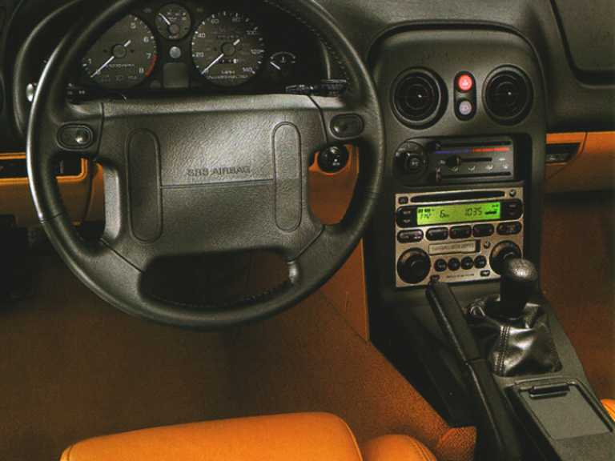
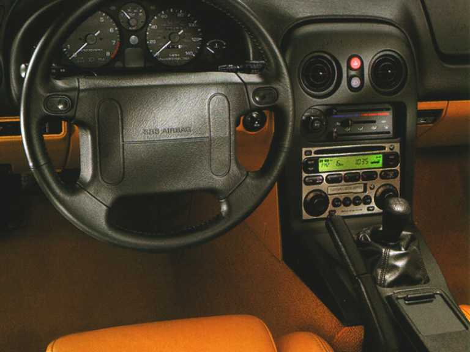

Modellévenkénti részletes specifikációk
| Modellév | Motor | Teljesítmény | Gyorsulás 0–100 km/h | Végsebesség | Súly |
|---|---|---|---|---|---|
| 1989–1993 | 1.6L DOHC, 4 henger, 16 szelep | 115 LE (85 kW) @ 6 500 ford./perc | 8,8 s | 195 km/h | kb. 955 kg |
| 1994–1997 | 1.8L DOHC, 4 henger, 16 szelep | 128–133 LE (95–99 kW) @ 6 500 ford./perc | 8,1 s | 203 km/h | kb. 990 kg |
További műszaki adatok
| Hajtás | Hátsókerék-meghajtás (RWD) |
|---|---|
| Fogyasztás (kombinált) | 7–8 l/100 km |
| Tengelytáv | 2 265 mm |
| Csomagtartó | kb. 120 liter |
 

Forrás: Automobile Catalog